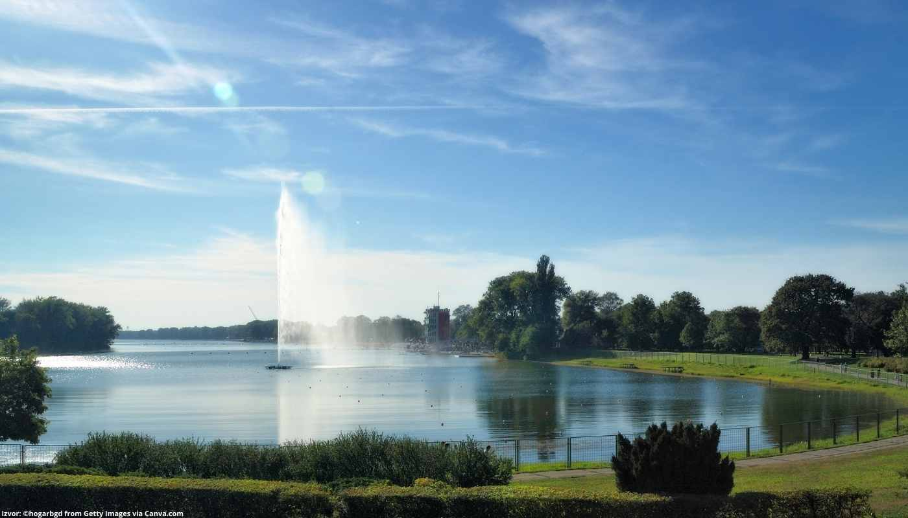
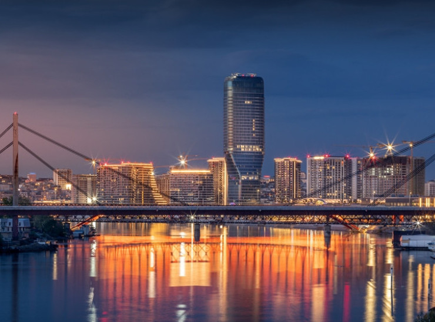

Ukratko o Beogradu
Beograd je glavni grad i najveći grad Srbije, sa oko 1,6miliona stanovnika smješten na ušću rijeka Save i Dunava. Ovaj grad ima bogatu istoriju, koji seže hiljadama godina unazad, te je domaćin raznim kulturama i civilizacijama koje su oblikovale njegov karakter.Jedna od najupečatljivijih značaja Beograda je njegova mešavina arhitektonskih stilova. Dok se u starom dijelu grada, poznatom kao Stari Grad, mogu naći impozantne građevine iz doba Otomanskog Carstva, poput Beogradske tvrđave, u Novom Beogradu vidljivi su znakovi modernizacije i socijalističke ere, s visokim stambenim neboderima i širokim bulevarima.
Beograd je poznat i po svojoj bogatoj kulturnoj sceni. Grad ima mnoge muzeje, galerije i crkve, a njegova muzička scena takođe je vrlo aktivna. Beograd je domaćin brojnim muzučkim festivalima, od elektroničke muzike do klasične muzike, privlačeći posjetitelje iz cijelog svijeta. Jedan od nezaobilaznih dijelova beogradske kulture je i njegova gastronomija. Grad nudi obilje restorana i kafića koji poslužuju ukusne srpske specijalitete, poput ćevapčića, pljeskavica i sarmi, uz nezaobilaznu rakiju ili beogradsko pivo. Beograd je takođe poznat po svojim parkovima, posebno parku Kalemegdan, koji se prostire uz Beogradsku tvrđavu i nudi prekrasan pogled na ušće Save i Dunava. Osim toga, Ada Ciganlija je popularno rekreativno područje na reci Savi, gde posetioci mogu uživati u sportskim aktivnostima i kupanju
Neka od najpopulanijih mesta u Beogradu
Kalemegdan

Ada Ciganlija
Knez Mihailova

Hram Svetog Save

Beograd na vodi
Avala